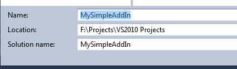
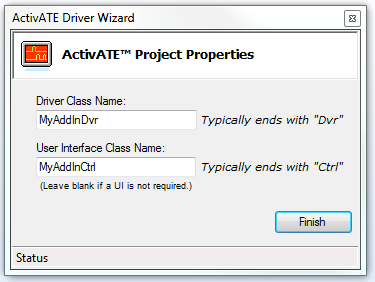
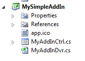

The ActivATE SDK is designed to create a driver shell that developers can add their own code to. The driver shell comes in two flavors: a Simple Add In or an Instrument Driver that references VISA.
To install the SDK, download the latest SDK install
from the ActivATE web site at:
http://www2.astronicstestsystems.com/ActivATE/SoftwareInfo/Features/SDKInfo.aspx
Run the SDK MSI file and follow the directions. The templates will be installed for both Visual Studio 2008 and Visual Studio 2010. After installing the ActivATE SDK, two project templates will be available in Visual Studio. Using the Visual Studio File→New Project menu item, select "ActivATE Test Platform" as the installed template type from the Visual C# selections. Two templates are available: An Instrument Driver template and the Simple Add-In template.
The Simple Add-In template is a framework that will inherit from the Interfaces base class "GenericDriver". The Instrument template will inherit from the Interfaces base class "GenericInstrument". Both of these base classes will give a rich set of interfaces and tools to the new driver. Developers should only select the Instrument Template if they need to write an instrument driver that will communicate with hardware over VISA, RS-232, GPIB, TCP/IP, etc.
As an example, let's create a Simple Add-In module. Select this as the template and enter any name and location you wish for the new Add-In.

The next dialog that appears will be for the name of the "back-end" driver class and the "front-end" GUI class. You may select any name you wish for either class name, however, it is recommended that "Dvr" be used as a suffix for the driver class and "Ctrl" be used as the suffix for the GUI class. When this module is added to the ActivATE framework using the Configuration Manager dialog box, these two class names will be selected automatically, triggered off the "Dvr" and "Ctrl" suffix.
|  | After pressing the "Finish" button, the Visual Studio project will
look like this....  |
The project is already setup to use ActivATE as the debug EXE program. At this step, developers can build and run the project. The output of the new "MyAddIn.DLL" will go directly to the ActivATE runtime directory. The driver is not automatically added to the ActivATE configuration. This will have to be done manually through the "Configuration Manager"
When ActivATE launches and the driver is part of the ActivATE configuration (toolset), developers can now debug and step through code. Since ActivATE runs in the "front-end", and this is the application we have set Visual Studio to use as the debug EXE, only the new Add-In GUI class (in this case, "MyAddInCtrl" class) can be debugged as things stand out-of-the-box. To debug the back-end, that is, the "MyAddInDvr" class, the developer will have to "Attach to Process" using the Visual Studio Debug Tools menu and attach to the "StationRuntime" exe. Now developers can step into and out-of both the front-end GUI class and back-end driver class.
DEVELOPERS NOTE FOR VISUAL STUDIO 2010 : If developers are debugging an add-in by running a .NET test program in ActivATE, Visual Studio 2010 will lock a temporary output file used by the .NET compiler (TIU1.DLL). That is, developers will get one chance to run a test program before Visual Studio locks the file. On subsequent test program runs, this file is rebuilt and needs to be overwritten; it cannot be (it is locked by Visual Studio). This does not occur in VS2008. If debugging API calls in the driver, VS2010 developers are encouraged to use VBScript to debug the API call or to simply use the GUI to call the API (as in pressing a "test" button.
see also: Adding Drivers to ActivATE | Creating .NET Drivers - An Overview
Astronics Test Systems
Last updated on August 12, 2015 by D. Ignacio